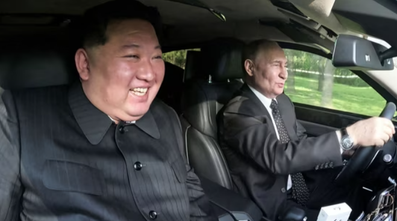
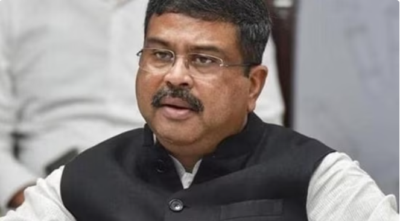
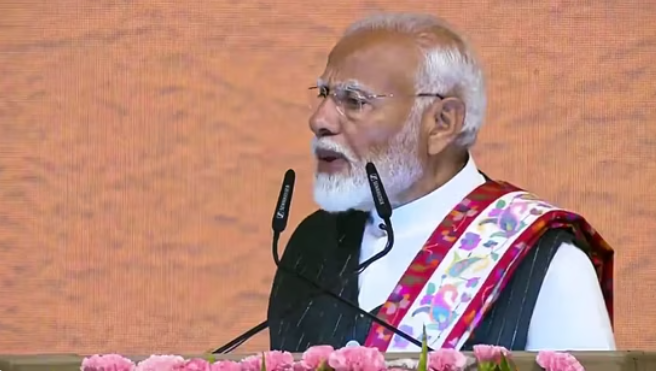

 Video released by Russian state TV showed Putin jumping behind the wheel of the black armoured Aurus.Russian President Vladimir Putin and North Korean leader Kim Jong-un took turns to drive each other around in a Russian-built Aurus limousine on Wednesday after the Kremlin said Putin had gifted one of the luxury vehicles to Kim.In a carefully staged public relations opportunity held amid tight security, the two leaders used the moment to show how close their working relationship has become during what was a pomp-filled visit to Pyongyang by Putin, his first in nearly a quarter of a century.Their jaunt took place after the two leaders had signed a deal that included a mutual defence pledge, one of Russia's most significant moves in Asia for years that Kim said amounted to an "alliance". Video released by Russian state TV showed Putin jumping behind the wheel of the black armoured Aurus, which is his official presidential car back in Russia, with Kim getting in the passenger seat.The car is then shown driving on a road which weaves its way through a carefully manicured park area before coming to a halt. A Korean man in a suit wearing white gloves is seen opening the door for Kim before rushing round to hold Putin's door.
 After cancelling the UGC-NET 2024 examination, Centre reassured the students that the government that the interest of students will always be kept in mind.Day after announcing the cancellation of the UGC-NET 2024 examination, the Centre reassured the students that their best interest will be kept in mind when it comes to the National Eligibility Test. Education Minister Dharmendra Pradhan further said that a CBI probe has been launched after Centre got reports of the examination being compromised.While speaking on the cancellation of the UGC-NET 2024 exam, Dharmendra Pradhan told ANI, “I want to assure the students, this is your govt...have faith, the interest of students is key to us...Yesterday evening, IC4 gave input on UGC-NET that there is a possibility that the exam was compromised. We researched and we also felt that the exam was compromised...we cancelled the exam and initiated CBI enquiry.”While addressing a press conference on Thursday, the education minister spoke about the cancellation of the exam and said, “We take responsibility, we have to rectify system.” He further assured the students that no irregularities or malpractice will be tolerated by the government.
 Amid the recent terror attacks in Jammu and Kashmir, PM Narendra Modi said that the Centre will “teach a lesson to the enemies.”Prime Minister Narendra Modi on Thursday issued a stern statement on the recent string of terror attacks in Jammu and Kashmir, while addressing a gathering in Srinagar. Assuring people that peace will be established in the region, PM Modi said that the preparations are underway to make sure that assembly elections are conducted in Jammu and Kashmir smoothly.PM Modi said that the “enemies” of peace and humanity don't like progress in Jammu and Kashmir. He also assured the public that the Centre has taken the recent wave of terror attacks in the union territory very seriously.While addressing an event in Srinagar, PM Modi said, "The enemies of peace humanity don't like development. Today, they are making their last efforts so that progress in Jammu and Kashmir stops and peace is not established. The government has taken the recent terror attacks very seriously. The Union Home Minister (Amit Shah) has chaired a meeting with the officials of Jammu and Kashmir to review them." The prime minister also stressed that the Union Home Ministry has reviewed the security and law and order situation in Jammu and Kashmir in collaboration with the local administration.